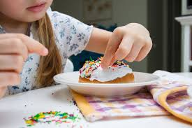

Sweet Crumbs Bakery is a small, family-run business dedicated to bringing freshly baked happiness to every table. Founded with passion and love for baking, we specialize in crafting cakes, pastries, and sweets that are not only delicious but also made with the highest standards of hygiene and quality. Every recipe is time-honored, blending tradition with flavor to ensure every bite feels like home.

Phone: +92 300 1234567
Email: info@sweetcrumbs.com
Address: 123 Bakery Lane, Islamabad, Pakistan